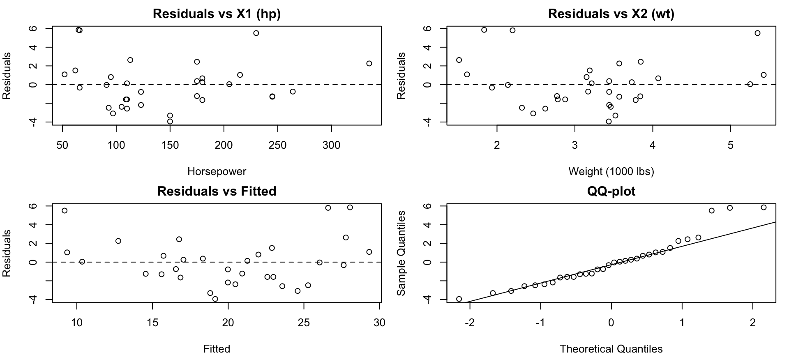

mpg hp wt
Mazda RX4 21.0 110 2.620
Mazda RX4 Wag 21.0 110 2.875
Datsun 710 22.8 93 2.320
Hornet 4 Drive 21.4 110 3.215
Hornet Sportabout 18.7 175 3.440
Valiant 18.1 105 3.460PSTAT 126: Linear Regression
UC Santa Barbara
2026-11-19
By the end of today you will be able to:
Running example: We model fuel efficiency (\(Y\), mpg) for \(n = 32\) cars using horsepower (\(X_1\)) and weight (\(X_2\), 1000 lbs) from the built-in mtcars dataset.
mpg hp wt
Mazda RX4 21.0 110 2.620
Mazda RX4 Wag 21.0 110 2.875
Datsun 710 22.8 93 2.320
Hornet 4 Drive 21.4 110 3.215
Hornet Sportabout 18.7 175 3.440
Valiant 18.1 105 3.460The model: \(Y_i = \beta_0 + \beta_1 X_{i1} + \beta_2 X_{i2} + \epsilon_i\), where \(\epsilon_i \overset{\text{iid}}{\sim} N(0,\sigma^2)\).
Under our model assumptions (\(\epsilon_i \overset{\text{iid}}{\sim} N(0,\sigma^2)\)), each OLS estimate \(b_k\) is normally distributed and unbiased for \(\beta_k\). Replacing the unknown \(\sigma^2\) with \(\text{MSE}\) gives a standard error \(SE(b_k)\), and the standardized estimate follows a \(t\)-distribution:
\[\frac{b_k - \beta_k}{SE(b_k)} \sim t(n - p)\]
This is exactly the same logic as SLR. The only difference is the degrees of freedom are \(n - p\) instead of \(n - 2\), because we now estimate \(p\) parameters. This result is what licenses \(t\)-tests and confidence intervals for each \(\beta_k\).
Let \(SE(b_k)\) denote the standard error of \(b_k\).\(SE(b_k)\) is the estimated standard deviation of the sampling distribution of \(b_k\).
A \(100(1-\alpha)\%\) confidence interval for \(\beta_k\) is:
\[b_k \pm t\!\left(1 - \tfrac{\alpha}{2};\; n - p\right) \cdot SE(b_k)\]
Interpretation: We are \(100(1-\alpha)\%\) confident that the true average change in \(Y\) for a one-unit increase in \(X_k\), holding all other predictors in the model constant, lies in this interval.
Partial effect: \(\beta_k\) is the expected change in \(Y\) per unit increase in \(X_k\) holding all other predictors constant. The CI is for this partial effect in the fitted model — not for a simple regression of \(Y\) on \(X_k\) alone.
To test whether \(X_k\) has a linear relationship with \(Y\), given the other predictors:
\[H_0: \beta_k = 0 \qquad H_a: \beta_k \neq 0\]
Test statistic:
\[t^* = \frac{b_k}{SE(b_k)}\]
Decision rule: Reject \(H_0\) at level \(\alpha\) if \(|t^*| > t(1 - \alpha/2;\; n - p)\).
Warning
The \(t\)-test for \(\beta_k\) is a partial test. A predictor that is not significant in the full model may be significant in a simple regression of \(Y\) on \(X_k\) alone, and vice versa, due to correlations among predictors.
summary()
Call:
lm(formula = mpg ~ hp + wt, data = mtcars)
Residuals:
Min 1Q Median 3Q Max
-3.941 -1.600 -0.182 1.050 5.854
Coefficients:
Estimate Std. Error t value Pr(>|t|)
(Intercept) 37.22727 1.59879 23.285 < 2e-16 ***
hp -0.03177 0.00903 -3.519 0.00145 **
wt -3.87783 0.63273 -6.129 1.12e-06 ***
---
Signif. codes: 0 '***' 0.001 '**' 0.01 '*' 0.05 '.' 0.1 ' ' 1
Residual standard error: 2.593 on 29 degrees of freedom
Multiple R-squared: 0.8268, Adjusted R-squared: 0.8148
F-statistic: 69.21 on 2 and 29 DF, p-value: 9.109e-12summary() Output
Call:
lm(formula = mpg ~ hp + wt, data = mtcars)
Residuals:
Min 1Q Median 3Q Max
-3.941 -1.600 -0.182 1.050 5.854
Coefficients:
Estimate Std. Error t value Pr(>|t|)
(Intercept) 37.22727 1.59879 23.285 < 2e-16 ***
hp -0.03177 0.00903 -3.519 0.00145 **
wt -3.87783 0.63273 -6.129 1.12e-06 ***
---
Signif. codes: 0 '***' 0.001 '**' 0.01 '*' 0.05 '.' 0.1 ' ' 1
Residual standard error: 2.593 on 29 degrees of freedom
Multiple R-squared: 0.8268, Adjusted R-squared: 0.8148
F-statistic: 69.21 on 2 and 29 DF, p-value: 9.109e-12\(SE(b_0) = 1.599\): estimated std. dev. of \(b_0\)
\(SE(b_1) = 0.009\): estimated std. dev. of \(b_1\)
\(SE(b_2) = 0.633\): estimated std. dev. of \(b_2\)
t value = \(b_k / SE(b_k)\): test statistic for \(H_0: \beta_k = 0\)
Residual std error \(= \hat{\sigma} = \sqrt{\text{MSE}}\); df \(= n - p = 29\)
confint()Interpreting \(b_k\):
\(b_1 = -0.032\): the estimated average change in fuel efficiency for each 1 hp increase is \(-0.032\) mpg, holding all other predictors in the model constant.
\(b_2 = -3.878\): the estimated average change in fuel efficiency for each 1,000 lb increase in weight is \(-3.878\) mpg, holding all other predictors in the model constant.
Interpreting the 95% CIs:
We are 95% confident that the true average change in mpg for each 1 hp increase is between \(-0.050\) and \(-0.013\) mpg, holding all other predictors in the model constant.
We are 95% confident that the true average change in mpg for each 1,000 lb increase in weight is between \(-5.172\) and \(-2.584\) mpg, holding all other predictors in the model constant.
Both CIs exclude zero, so both predictors are significant at \(\alpha = 0.05\).
We model fuel efficiency (mpg) for \(n = 32\) cars using horsepower (\(X_1\)) and weight (\(X_2\), 1000 lbs) from mtcars.
Call:
lm(formula = mpg ~ hp + wt, data = mtcars)
Residuals:
Min 1Q Median 3Q Max
-3.941 -1.600 -0.182 1.050 5.854
Coefficients:
Estimate Std. Error t value Pr(>|t|)
(Intercept) 37.22727 1.59879 23.285 < 2e-16 ***
hp -0.03177 0.00903 -3.519 0.00145 **
wt -3.87783 0.63273 -6.129 1.12e-06 ***
---
Signif. codes: 0 '***' 0.001 '**' 0.01 '*' 0.05 '.' 0.1 ' ' 1
Residual standard error: 2.593 on 29 degrees of freedom
Multiple R-squared: 0.8268, Adjusted R-squared: 0.8148
F-statistic: 69.21 on 2 and 29 DF, p-value: 9.109e-12(a) Using the output above, compute \(t^*\) for \(H_0: \beta_1 = 0\). What distribution does it follow under \(H_0\)?
(b) The critical value is \(t(0.975;\; 29) = 2.045\). State your conclusion in context.
(c) Would you reach a different conclusion for \(H_0: \beta_2 = 0\)? Why or why not?
(a) \(t^* = b_1 / SE(b_1) = -0.032 / 0.009 = -3.52\). Under \(H_0\), \(t^* \sim t(n - p) = t(29)\).
(b) Since \(|t^*| = 3.52 > t(0.975;\; 29) = 2.045\), we reject \(H_0\) at \(\alpha = 0.05\). There is strong evidence that horsepower is a significant predictor of fuel efficiency, holding weight constant.
(c) Same conclusion (reject), but stronger evidence. For \(X_2\): \(t^* = -3.878 / 0.633 = -6.13\). Since \(|t^*| = 6.13 > 2.045\), we reject \(H_0: \beta_2 = 0\) at \(\alpha = 0.05\). Both predictors are significant, with weight carrying a stronger signal.
For a new predictor vector \(\mathbf{X}_h = (1,\, X_{h,1},\, \ldots,\, X_{h,p-1})^T\), the point estimate is the same for both goals:
\[\hat{Y}_h = b_0 + b_1 X_{h,1} + \cdots + b_{p-1} X_{h,p-1} = \mathbf{X}_h^T \mathbf{b}\]
| Goal | We are estimating | Interval type |
|---|---|---|
| Mean mpg across all cars with \(\mathbf{X}_h\) | \(E(Y_h) = \mathbf{X}_h^T\boldsymbol{\beta}\) | Confidence interval |
| Mpg for one new car with \(\mathbf{X}_h\) | Individual \(Y_h^*\) | Prediction interval |
The point estimate \(\hat{Y}_h\) is the same. The intervals differ in width because they quantify different uncertainty.
Let \(SE(\hat{Y}_h)\) denote the estimated standard error of \(\hat{Y}_h\), computed from the fitted model.
Sampling distribution:
\[\frac{\hat{Y}_h - E(Y_h)}{SE(\hat{Y}_h)} \sim t(n - p)\]
A \(100(1-\alpha)\%\) CI for \(E(Y_h)\):
\[\hat{Y}_h \pm t\!\left(1 - \tfrac{\alpha}{2};\; n - p\right) \cdot SE(\hat{Y}_h)\]
For a single new observation \(Y_h^*\), there are two sources of uncertainty:
Combined: \(SE^2(\text{pred}) = \text{MSE} + SE^2(\hat{Y}_h)\)
A \(100(1-\alpha)\%\) PI for \(Y_h^*\):
\[\hat{Y}_h \pm t\!\left(1 - \tfrac{\alpha}{2};\; n - p\right) \cdot SE(\text{pred})\]
The PI is always wider than the CI because \(SE(\text{pred}) > SE(\hat{Y}_h)\).
| CI for \(E(Y_h)\) | PI for new \(Y_h^*\) | |
|---|---|---|
| Estimates | Mean of \(Y\) at \(\mathbf{X}_h\) | Individual future \(Y\) |
| Variance | \(\text{MSE}\cdot\mathbf{X}_h^T(\mathbf{X}^T\mathbf{X})^{-1}\mathbf{X}_h\) | \(\text{MSE}\!\left(1 + \mathbf{X}_h^T(\mathbf{X}^T\mathbf{X})^{-1}\mathbf{X}_h\right)\) |
| Narrower when? | \(n \to \infty\) (shrinks to point) | Bounded below by \(\approx 2 \cdot 1.96\hat\sigma\) |
| R argument | interval = "confidence" |
interval = "prediction" |
Even with infinite data you cannot perfectly predict a single new observation — there is always irreducible randomness \(\sigma^2\). The CI for \(E(Y_h)\) shrinks; the PI does not.
predict()Suppose we want results for a car with \(X_{1h} = 150\) hp and \(X_{2h} = 3.2\) thousand lbs.
Both intervals are centered at \(\hat{Y}_h = 20.05\) mpg:
95% CI for \(E(Y_h)\): \((19.11,\; 20.99)\) mpg
We are 95% confident that the mean fuel efficiency across all cars with 150 hp and 3,200 lbs is between 19.11 and 20.99 mpg.
Width: 1.88 mpg
95% PI for a new \(Y_h^*\): \((14.67,\; 25.44)\) mpg
We are 95% confident that one specific new car with 150 hp and 3,200 lbs will have fuel efficiency between 14.67 and 25.44 mpg.
Width: 10.77 mpg — about five times wider.
The PI’s extra width comes entirely from \(\text{MSE} = 2.593^2 \approx 6.72\), the irreducible variability in individual mpg around the mean.
A researcher models crop yield (\(Y\), bu/acre) on rainfall (\(X_1\), in.) and fertilizer (\(X_2\), lbs/acre), \(n = 30\), \(p = 3\). For \(X_{1h} = 12\) and \(X_{2h} = 100\):
\(\hat{Y}_h = 95.3\), \(\quad s(\hat{Y}_h) = 2.1\), \(\quad \text{MSE} = 25\), \(\quad t(0.975;\; 27) = 2.052\)
(a) Construct a 95% CI for mean yield in all fields with these conditions.
(b) Compute \(SE(\text{pred})\) and construct a 95% PI for a single new field.
(c) Why is the PI wider than the CI even though they have the same center?
(a) 95% CI for \(E(Y_h)\):
\[\hat{Y}_h \pm t(0.975;\,27) \cdot SE(\hat{Y}_h) = 95.3 \pm 2.052 \times 2.1 = 95.3 \pm 4.31 = (91.0,\; 99.6) \text{ bu/acre}\]
(b) \(SE^2(\text{pred}) = \text{MSE} + SE^2(\hat{Y}_h) = 25 + 2.1^2 = 25 + 4.41 = 29.41\), so \(SE(\text{pred}) = \sqrt{29.41} = 5.42\).
\[95.3 \pm 2.052 \times 5.42 = 95.3 \pm 11.12 = (84.2,\; 106.4) \text{ bu/acre}\]
(c) The PI accounts for two sources of uncertainty: (1) estimating the mean response (shared with CI), and (2) the random error of the new individual observation — \(\sigma^2\) never disappears, no matter how much data we collect. The CI captures only the estimation component, which shrinks to zero as \(n \to \infty\).
The model \(Y_i = \beta_0 + \beta_1 X_{i1} + \cdots + \beta_{p-1}X_{i,p-1} + \epsilon_i\) requires:
1. Linearity — \(E(Y_i)\) is a linear function of the predictors. The mean response lives on the regression hyperplane.
2. Independence — Responses \(Y_1, \ldots, Y_n\) are independent. Most relevant when data has a time or spatial order.
3. Equal Variance (Homoscedasticity) — \(\text{Var}(\epsilon_i) = \sigma^2\) for all \(i\). Residual spread should not change with fitted values or predictor levels.
4. Normality — \(\epsilon_i \overset{\text{iid}}{\sim} N(0, \sigma^2)\). Required for exact inference; less critical with large \(n\) by CLT.
| Plot | Assumption checked | Signal of violation |
|---|---|---|
| Residuals vs. each \(X_k\) | Linearity (1) | Systematic curve or pattern |
| Residuals vs. time/case order | Independence (2) | Trend, runs, or cycles |
| Residuals vs. fitted \(\hat{Y}\) | Equal variance (3) | Fan shape; changing spread |
| Normal QQ-plot | Normality (4) | Points off the diagonal |
A good residual plot shows residuals scattered randomly around zero with no pattern. Any systematic structure signals a violated assumption.
par(mfrow = c(2, 2), mar = c(4, 4, 2, 1))
plot(mtcars$hp, residuals(fit1), xlab = "Horsepower",
ylab = "Residuals", main = "Residuals vs X1 (hp)"); abline(h = 0, lty = 2)
plot(mtcars$wt, residuals(fit1), xlab = "Weight (1000 lbs)",
ylab = "Residuals", main = "Residuals vs X2 (wt)"); abline(h = 0, lty = 2)
plot(fitted(fit1), residuals(fit1), xlab = "Fitted",
ylab = "Residuals", main = "Residuals vs Fitted"); abline(h = 0, lty = 2)
qqnorm(residuals(fit1), main = "QQ-plot"); qqline(residuals(fit1))
Residuals vs \(X_1\) (hp): Points scatter around zero without a systematic curve — linearity looks satisfied for horsepower.
Residuals vs \(X_2\) (wt): No obvious trend or pattern — linearity satisfied for weight as well.
Residuals vs Fitted: Spread is roughly constant across the fitted range — equal variance appears satisfied (no fanning).
QQ-plot: Points track the diagonal closely — normality is plausible.
The first-order model assumptions appear satisfied — inferential results (\(t\)-tests, CIs, prediction intervals) are reliable for these data.
Sampling distribution: \((b_k - \beta_k)/SE(b_k) \sim t(n-p)\); degrees of freedom are \(n-p\) because we estimate \(p\) parameters
Inference on \(\beta_k\): CI is \(b_k \pm t(1-\alpha/2;\, n-p)\cdot SE(b_k)\); test rejects \(H_0: \beta_k = 0\) when \(|t^*| > t(1-\alpha/2;\, n-p)\); each test is partial — holds all other predictors constant
CI for \(E(Y_h)\): \(\hat{Y}_h \pm t \cdot SE(\hat{Y}_h)\) — estimates the mean response at \(\mathbf{X}_h\); narrows to zero as \(n \to \infty\); use interval = "confidence" in predict()
PI for new \(Y_h^*\): \(\hat{Y}_h \pm t \cdot SE(\text{pred})\) where \(SE^2(\text{pred}) = \text{MSE} + SE^2(\hat{Y}_h)\) — always wider than CI; bounded below by irreducible \(\sigma^2\); use interval = "prediction"
Diagnostics: residuals vs. each \(X_k\) (linearity), vs. fitted (equal variance), QQ-plot (normality); independence requires a time/order plot
PSTAT 126 — Fall 2026 · UC Santa Barbara